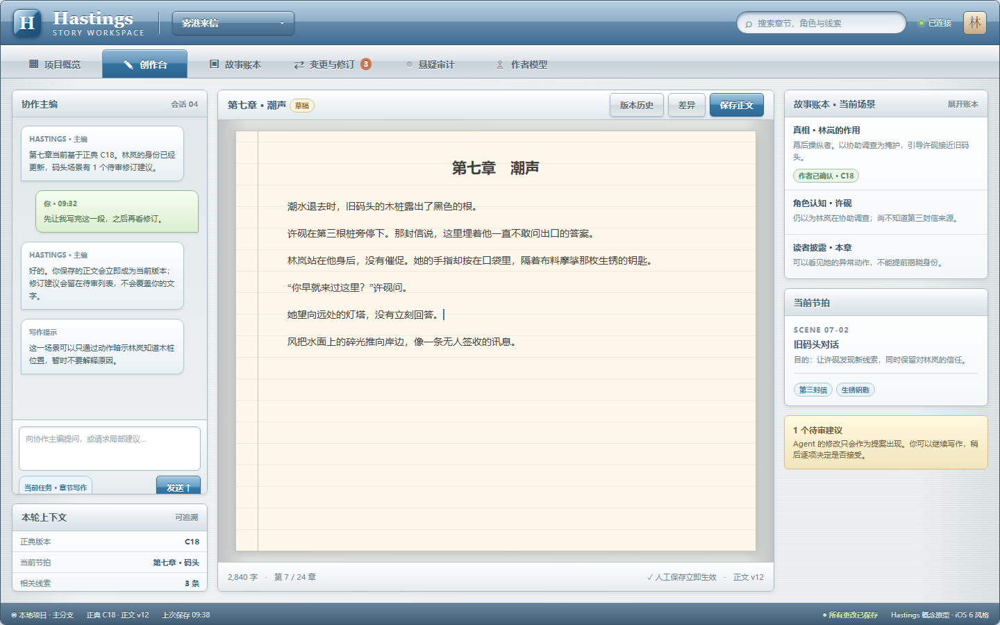

Hastings · 桌面网页端原型
老 iOS 的视觉语言，用于多栏网页工作台；7 张页面串起小说创作与修订流程。
WEB APPLICATION / iOS 6 VISUAL LANGUAGE
01项目概览下一步任务与项目状态
02创作台主编对话、正文、故事事实并列

03故事账本真相、角色认知、读者披露
04变更影响事实变化的下游路径
05修订审阅局部补丁与作者决定
06悬疑审计三层事实的一致性检查
07作者模型有证据的写作偏好
老 iOS 的视觉语言，用于多栏网页工作台；7 张页面串起小说创作与修订流程。
